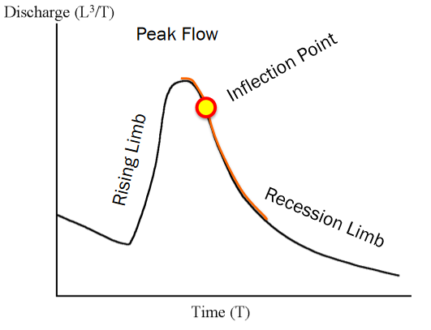
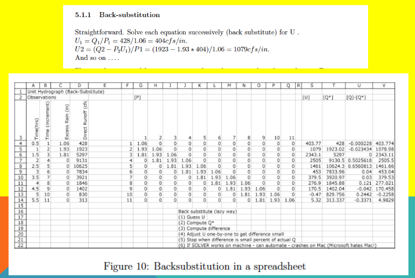
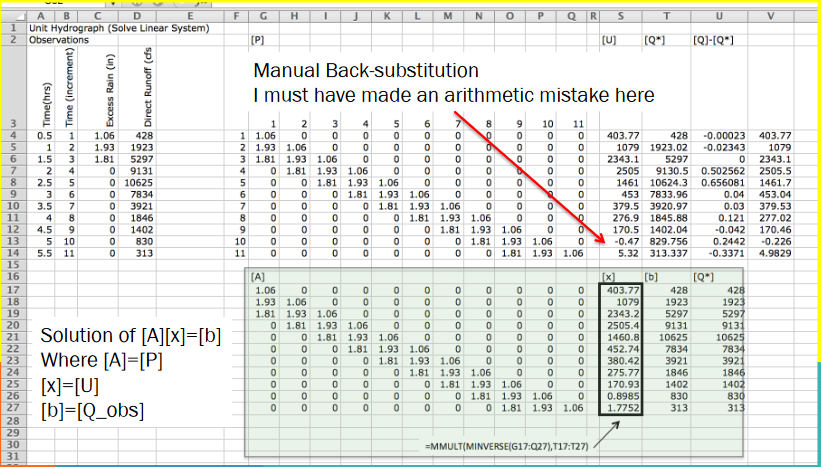
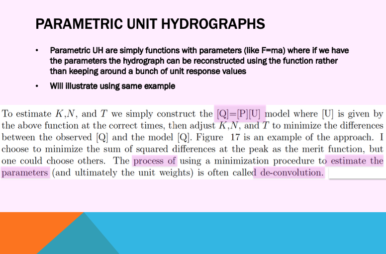
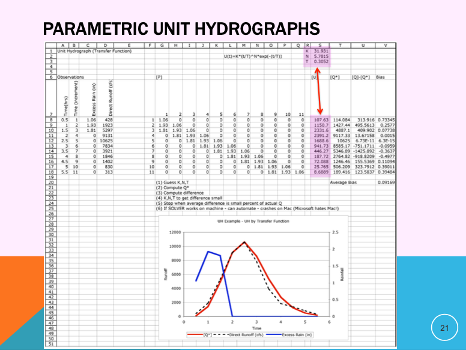
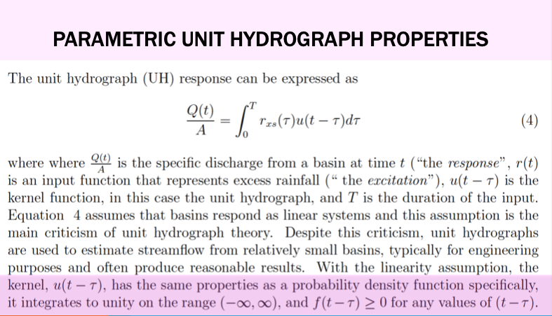

14. Unit Hydrographs - I (Analysis)¶
Course Website
Readings¶
Videos¶
Spreadsheets¶
Listed below are spreadsheets that implement simple UH examples. They are Excel (circa 2009) spreadsheets, that work in current Excel, LibreOffice, and Numbers environments
Outline¶
Hydrographs
Baseflow
Separation Techniques
Unit Hydrographs
Analysis (implies have paired data)
Back-Substitution
OLS Regression
Parametric Unit Hydrographs
Some examples
Hydrographs¶
A hydrograph is a graphical (or tabular) representation that shows how the flow rate of water in a river or stream changes over time at a specific location. In engineering hydrology, hydrographs are used to analyze and predict the response of a watershed to precipitation events. They typically display the rate of discharge (usually in cubic meters per second) on the vertical axis and time on the horizontal axis. Key features of a hydrograph include the rising limb, which represents the increase in flow following a precipitation event; the peak discharge, which is the maximum flow rate; and the recession limb, which indicates the decrease in flow as water drains away. Hydrographs are essential tools for designing flood control measures, managing water resources, and understanding watershed behavior. His a plot (or paired time-discharge values) of discharge versus time for a location (on a stream).

An idealized hydrograph has
Rise portion
Peak portion
Recession portion
Inflection point The hydrograph pictured also has a baseflow component
Flow in absence of a storm
Baseflow¶
Baseflow refers to the portion of streamflow that comes from groundwater or other long-term sources, which sustain the flow in a river during dry periods.
Direct runoff or stormflow represents the portion of streamflow generated by a precipitation event, including surface runoff, interflow, and quick subsurface flow.
Baseflow separation is a process used in hydrology to distinguish between the baseflow and the direct runoff components of streamflow in a hydrograph.
When analyzing a hydrograph, baseflow separation is crucial for isolating the direct runoff response from the baseflow, as this separation helps to accurately determine the watershed’s response to rainfall events. The baseflow is typically represented as a relatively stable, lower flow rate, while the direct runoff appears as a spike or peak following a precipitation event. By separating these components, hydrologists can better understand the immediate impact of rainfall on streamflow, which is essential for flood forecasting and water resource management.
Baseflow separation methods¶
Methods to estimate/stipulate baseflow are:
Constant discharge method¶

When rising limb starts – declare that value to constant rate during the event, rejoin as recession limb.
All flow above the value is declared storm flow
Constant slope method¶

When rising limb starts – draw a segment from that value to the inflection point on the recession limb
All flow above the value is declared storm flow
Hard to implement for multiple peak hydrographs (real hydrographs may exhibit many peaks)
Concave method¶

When rising limb starts – draw a segment from that value following the recession curve to a point beneath the peak flow.
Then draw a segment from the point above to the inflection point
All flow above the segments are declared storm flow
Hard to implement for multiple peak hydrographs (real hydrographs exhibit many peaks)
There are a few more ways to accomplish baseflow separation
The master-depletion curve method is outlined in the readings (RSG pp. 345)
For many practical cases with multiple peaked hydrographs the constant discharge method is probably the most straightforward to apply (or use continuous simulation techniques – outside scope this course)
Unit Hydrographs¶
A unit hydrograph is a specific type of hydrograph used in hydrology to represent the response of a watershed to a unit of rainfall excess over a given duration. It is a theoretical tool that helps in understanding how a watershed responds to a uniform rainfall event, usually 1 cm of runoff over the entire basin, occurring over a specified time period, such as an hour or a day.
In a unit hydrograph, the vertical axis represents the flow rate (typically in cubic meters per second), while the horizontal axis represents time. The shape of the unit hydrograph is determined by the physical characteristics of the watershed, such as its size, shape, slope, and land use. It is an essential tool for hydrologists because it allows them to predict the streamflow response to any given rainfall event by scaling and combining the unit hydrographs for different rainfall inputs. This helps in flood forecasting, water resource management, and the design of hydraulic structures.
To construct a unit hydrograph, it is important to isolate the direct runoff portion of the hydrograph from the total streamflow. This means separating the baseflow so that only the runoff generated by the rainfall event is considered. Baseflow separation ensures that the unit hydrograph reflects only the direct runoff, which is critical for the correct scaling and summation of unit hydrographs when predicting the streamflow response to lare or multiple rainfall events.
Note
The unit hydrograph is a response/transfer function that transforms the distributed input to the outlet, accounting for transit time to get from remote parts of the watershed to the outlet.
Explains the temporal re-distribution of excess precipitation on a watershed
Models the response of the watershed at the outlet to a unit depth of excess precipitation
excess implies some kind of loss model is applied to the raw precipitation
Time re-distribution implies some kind of transfer behavior is applied
L. K. Sherman 1932 is credited with seminal publication of the concept
A pictoral way to conceptualize a unit hydrograph and rainfall runoff in general is to consider the watershed as a signal processor that converts the input signal (hyetograph) into an output signal (hydrograph). The processor discards some of the signal (losses); delays arrival of some of the signal at the output because of travel distances (transformation); and delays another portion by storing the signal for later use (sotrage).

Another way to picture it is the stack of pizza boxes model of the watershed

The time basis matters. In the figure below a single input of time length D produces the outlet response shown. The unit hydrograph is the kernel function that makes the transformation.

Unit hydrograph models contain a few common themes, first input hyetograph, then a loss model which are combined to produce the excess precipitation signal

The excess precipitation signal has the same total volume as the direct ruoff

And the unit hydrograph as a transfer function maps the excess hyetograph to the outlet

The storm induced flow is added to any baseflow to produce the total hydrograph.

Unit Hydrograph Assumptions¶
Direct runoff duration (time) is same for all uniform-intensity storms of same duration (time)
Two excess hyetographs of the same duration (time) will produce direct runoff hydrographs of the same duration (time) but with runoff rates proportional to the volumes (depth) of the excess hyetographs
The time distribution of direct runoff from a given storm duration is independent of concurrent runoff from prior storms (no memory)


Timing¶
Strictly speaking, each unit hydrograph has a particular duration associated with it, D in the diagram
That duration must coincide with the time step size used in discrete aggregation
Thus a D-hour unit hydrograph is a response to a D-hour “pulse” of excess precipitation.
The flow associated with that response is reported every D-hours until there is no further response (\(T_D\) in the diagram)
Each watershed has a characteristic response time, \(T_{lag}\) and \(T_P\) in the diagram. The characteristic time of the watershed is related to physical characteristics of the watershed contributing area, slope, etc. The time step size for aggregation must the same as the duration, and the time-to-peak for the watershed must be an integer multiple of that value.
Note
These requirements are coded into HEC-HMS which will issue warnings as these requirements are violated. As a designer you need to decide whether to ignore the warnings and proceede or adjust inputs and parameters to satisfy the various rules of the signal processing.
Convolution¶

How are they built from data (analysis)?¶
Will demonstrate several approaches by example (mostly using the same data and different methods)
Back-Substitution¶



Observe that if the linear system has full ranked matrix (rows=columns) and non-zero diagonal, one could just solve the resulting linear equation for the unitgraph weights
Probably better than manual back-substitution which is error prone
Many instances the system is over-determined; more equations than unknowns and an optimization technique is usually applied

Least-Squares¶
This method is good for over-determined cases, although may produce negative weights - usually these are small in magnitude and late in time, so not a huge issue but do need addressing when they arise.

The least squares approach treats the problem as a regression problem, and fits the weights to the data. A spreadsheet can implement the technique for smallish problems.

What are Unit Hydrographs used for?¶
They are useful to predict responses to future storms of correct duration.

A future storm of same duration but different magnitude (similar input sequence)

A future storm of same duration but different magnitude (different input sequence)

A future storm of same duration but different magnitude (different input sequence)

Parametric Unit Hydrographs¶
The unit weights from above can be replaced by a function whose shape is adjusted by one or more parameters, these are called parametric unit hydrographs.
Note
A parametric unit hydrograph is a mathematical representation of a unit hydrograph that uses a set of parameters to describe its shape and characteristics. Unlike empirical unit hydrographs, which are derived directly from observed data, parametric unit hydrographs are defined by mathematical functions with specific parameters that can be adjusted to match the observed hydrological response of a watershed.
Common types of parametric unit hydrographs include:
Gamma Distribution Unit Hydrograph: This uses the gamma distribution function to describe the time-to-peak, peak flow rate, and shape of the hydrograph. Parameters such as shape, scale, and time-to-peak are used to define the distribution.
Nash Cascade Model: This model assumes that the watershed can be represented as a series of linear reservoirs, each with a constant storage coefficient. The parameters include the number of reservoirs (N) and the storage coefficient (K), which together define the shape and timing of the hydrograph.
Synthetic Unit Hydrographs: These are constructed using standard shapes like triangular or dimensionless unit hydrographs, with parameters such as time-to-peak, peak discharge, and recession constant used to describe the hydrograph’s shape.
Parametric unit hydrographs are useful because they provide a flexible and efficient way to model the hydrological response of watersheds, especially in situations where direct measurement data may be limited or unavailable.




Value of Parametric Unit Hydrographs¶
Fewer values to keep track of
Simple extension of time-base
If the parameters can be associated with watershed metrics (Slope, MCL, soil properties, shape, etc.) the resulting model is called a synthetic unit hydrograph
Called synthetic because response can be synthesized from the metrics rather than from analyzing observations (which we may not have in cases of practical interest)
Time-Base Extension¶
Extending the time base of a UH is needed to accomodate storms of much different length than used in the analysis. Extension for parametric hydrographs is fairly easy, just extend the matrix as needed. For classically obtained weights, the S-curve technique as as good as any. Fortunately most software has parametric UH choices built-in, so this is a non-issue these days unless you are using historical UHs and need to bring them into the 21st century.


Summary concepts¶
Unit hydrographs map the excess precipitation signal to the outlet
Base-flow separation isolates the total discharge from the storm-induced discharge
Loss models are implicit; the unit hydrograph maps excess to the outlet
Back-substitution (linear equation) and Least-Squares analysis method illustrated.
Parametric UH described
Hydrograph Analysis
Measured rainfall and runoff to infer the transfer function. Implies: Have DATA.
Hydrograph Synthesis
Physical properties of watershed used to postulate the transfer function. Actual measurements not required – Produces an ESTIMATE